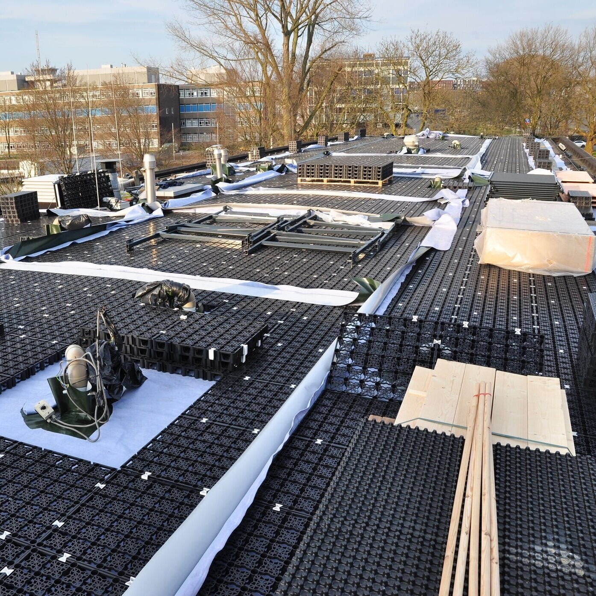

01どう動かしているのか。
国防省が所有・使用し、国の不動産機関が売却、市が将来の都市計画・参加手続きを担う。その中でVoets+TEPPが公開区画の日常管理、利用者対応、プログラムと情報発信を担い、AMS Instituteは都市課題に沿った実験と研究連携を支える。実験希望者は目的、当地で行う理由、実行計画、費用見積もりを提出する。水面、護岸、試験用屋根、建物、ローカルデータ処理設備などを利用できるが、一律の実験期間・選考点数・採択後の調達保証は公開ページでは確認できない。利用者との反復検証と、研究者・運営者・施設管理者の調整が中核である。市民の意見は地区計画にも別の公式手続きで反映される。実験の実施許可と、将来の土地利用を決める権限は一体ではない。
- 現場と課題の適合確認
- 実験計画・予算を提出
- 管理者と場所・設備を調整
- 生活空間で検証し改善
- 地区外の適用条件を整理
02誰が負担し、誰が担うか。
国・アムステルダム市が暫定開発・管理を委託。実験ごとの費用負担、現運営契約額、賃貸収入との構成比は未確認。
制度やプログラムの財源と、各参加企業・地域に発生する費用は同じではありません。公開範囲を超える案件別予算・契約条件は未確認です。
03確認できたこと。
2025年9月15日からVoets+TEPPが現場管理を担当。旧Bureau Marineterreinを現運営者として記す資料は更新が必要。
読み取れる範囲：運営交代は成果の改善・悪化を示す指標ではない。
原典で確かめる ↗ 出典の説明 ↓04日本で活かすなら。
【本調査の分析】日本では公有地・団地・駅周辺の一区画を対象に、実験窓口と通常管理の責任者を同じ会議につなぐ設計が使える。許認可の省略ではなく、誰が何を判断するかを見えるようにして実験の手戻りを減らす。住民はデータを提供するだけでなく、課題選択、負担の許容範囲、撤去条件の設計にも参加する。最初から地域外の導入先を一つ置き、場所固有の条件と持ち運べる手順を分けて記録すれば、一地区の魅力を超えて再現可能な運営資産にできる。
05そのまま真似できないこと。
公開区画は日常利用がある一方、独立管理された特殊な敷地であり、通常の市道・住宅地と承認条件が同一とは限らない。自治体の将来計画には約800戸と兵舎再編を含み、現状の活動は暫定利用である。地区の人気、実験数、研究件数を、そのまま住民便益や恒久調達に換算できない。実験ごとの意思決定権、継続費用、地区外導入率の横断データは未確認である。
06次に、何を確かめるか。
【提案・未実施】自治体と現場管理者が責任を持ち、1区画・3案件・90日で共通窓口を試す。従来案件と着手までの日数・担当者工数・利用者苦情を比較。調整時間20%減かつ重大苦情ゼロなら継続、住民負担や安全問題が増えれば運用を変更し、解消できなければ停止。
07現場を、写真と動画で。

PHOTO: Marineterrein Living Lab · 掲載元 ↗ · CC BY 3.0 ↗ · 縮小・表示枠に合わせた切り抜き。色変更なし。
冒頭写真：MarineterreinのAmsterdam Drone Labを示す上空からの実景。
Marineterrein：屋上緑化実験の空撮（公式掲載動画）
Marineterrein Amsterdam
公式サイトで見る ↗